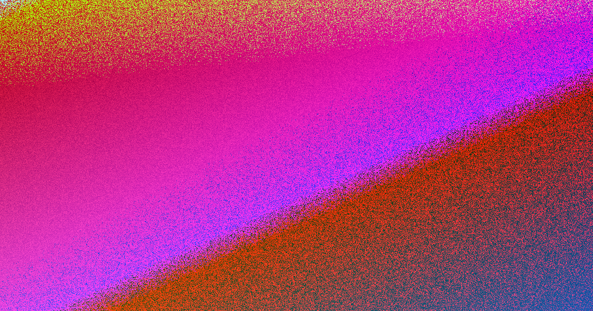

Most Sydney website projects succeed when you match the site to how customers decide, clarify the scope, and confirm ownership before committing. Costs vary by design complexity and features, with a standard build taking 4 to 12 weeks. A short written brief and several written quotes are the safest starting points.
For local buyers, web design sydney Focus on what the site must change first.
Web Design Sydney Explained
Sydney is not one market. A professional practice in North Sydney, a cafe in Surry Hills and an online retailer in Chatswood all need different proof, page structure and calls to action. The clearest starting point is the published position from web design Australia: a business website has to earn trust fast, explain the offer clearly, load cleanly on mobile and make the next enquiry step obvious. That matters in Sydney because the same structure will not answer the same questions for every buyer.
Before anyone talks colours, ask what the site has to change in the business. More qualified enquiries. A cleaner quote path. A stronger platform for operations. A redesign that protects useful pages already ranking. We start with the customer decision, then shape the design and content around that. This means mapping the buyer, separating local searchers, referral visitors and returning customers so the page order matches how they decide.
For businesses comparing web design options, the practical job is to match the site to the way customers decide, then test scope, platform, timing and ownership before any quote turns into a commitment. You can see current service details at web design.
Scope and Pricing
Scope signals that change the quote. The source page is unusually plain about pricing inputs. It says costs vary widely depending on scope, design complexity, content, and whether eCommerce or custom features are needed. It also names the work items that shift effort: page count, product data, integrations, copy readiness, redirects and ongoing care. That means a quote is only useful if the inclusion list is specific.
Check whether content, images, hosting and maintenance are included, and compare several written quotes rather than a single headline figure. A Sydney website can be ambitious without pretending that design alone controls Google, sales or the speed of a buyer's decision. The build gives clean foundations. Ongoing search growth still depends on content, authority, competition and time.
What pages are required now. Whether products or service variants need structured data entry. Which forms, bookings or other integrations matter on day one. What redirects or migration work is needed if an older site already ranks. A short project note is enough for us to recommend the next step. Send the brief and we will help you decide whether you need a small site, a deeper custom build, a redesign or a focused landing page before anyone starts quoting line items.
Platform Choice
Platform choice and ownership checks are critical. The source page does not treat platforms as a fashion choice. It names WordPress, Shopify, WooCommerce and custom builds, then says the right option should be chosen for operations and ownership. That is the right lens for a buyer, because the platform affects who can update the site, how products or pages are managed, and what support looks like after launch.
Choose the platform based on operations and ownership, not fashion. WordPress, Shopify, WooCommerce or a custom build are chosen for operations and ownership, not fashion. This affects who can update the site, how products or pages are managed, and what support looks like after launch. A Sydney website buyers can understand before they enquire. We work with local businesses right across the Sydney metro area, so the site is shaped around the customers you actually want to reach.
For businesses comparing web design options, the practical job is to match the site to the way customers decide, then test scope, platform, timing and ownership before any quote turns into a commitment. You can see current service details at web design.
Ownership and Handover
Ownership is equally important. The page says your domain, content and finished site stay yours, and that logins can be handed over. It also says confusion around hosting, editable content and ongoing care is where many projects go sideways. So ask for those items in writing before the build choice is locked.
Who controls the domain and hosting account. What admin access is handed over at launch. How editable the site is for your team. What care plan, backups, security and support are optional or included. We keep ownership, hosting, editable content and ongoing care plain, because confusion around those basics is where many web projects go sideways.
Domains, hosting, admin access and handover are discussed before build choices are locked. A Sydney website can be ambitious without pretending that design alone controls Google, sales or the speed of a buyer's decision. No platform lock in. Domains, hosting, admin access and handover are discussed before build choices are locked. You own the lot. Your domain, your content and your finished site stay yours. We hand over the logins and can show you how to update it.
Timing and Content Flow
The timing guidance on the page is narrow but useful. It says timelines depend on site size and on how quickly content and approvals are provided, and that a standard business website typically takes 4 to 12 weeks across discovery, design, development, testing and content creation. That is not a promise for every project, but it is a practical benchmark for planning.
The same page also shows why timing blows out. A deeper build with more pages, product data, integrations or redirect work is different from a shorter brief. A redesign can also carry extra review work if useful pages already ranking need to be protected. The safest move is to decide early who supplies copy, who signs off page order, and when testing feedback is due.
Lock the project goal before layout discussion starts. Decide whether existing copy is ready or needs rewriting. Schedule approvals so design and development are not waiting on basic inputs. Sydney website design for real businesses. We plan, write and build sites that explain what you do, load cleanly on mobile and make it simple for the right customer to enquire. Request a Website Review Estimate My Budget Get a Sydney website quote.
- Define the change. Write down whether the site needs more qualified enquiries, a cleaner quote path, a stronger platform or a redesign that protects existing pages.
- Map the buyer. Separate local searchers, referral visitors and returning customers so the page order matches how they decide.
- Choose the platform. Compare WordPress, Shopify, WooCommerce or a custom build on operations, ownership and who will update the site later.
- Price the real scope. Ask each provider to spell out page count, content, images, integrations, redirects, hosting and maintenance in writing.
- Confirm handover. Ensure domains, hosting, admin access and handover are discussed before the build path is finalised.
| Platform | Best For | Ownership |
|---|---|---|
| WordPress | Flexible sites you or your team can manage without a developer on call | You own the lot |
| Shopify | Online stores designed to load fast, build trust and convert browsers into buyers | You own the lot |
| Custom Build | Bespoke, strategy-led website design built around your Sydney business | You own the lot |
Common questions
How long does it take to build a website? Timelines depend on the size of the site and how quickly content and approvals are provided. A standard business website typically takes 4 to 12 weeks to design and build, including discovery, design, development, testing and content creation.
What should I ask for in a quote? You should ask for a clear inclusion list that covers page count, content, images, hosting and maintenance. Do not rely on a single headline figure.
This guide is an independent resource for Sydney businesses evaluating web design options.